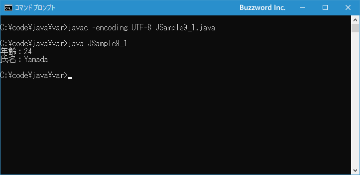

変数宣言で型推論を利用する
Java 10 から var を使用することで変数の宣言時にデータ型の記述を省略することができます。データ型を省略する代わりに初期化で変数に代入した値から自動的にデータ型を推測して設定します。これを型推論といいます。ここでは var を使ってデータ型を記述せずに変数の宣言を行う方法について解説します。
varを使った変数の宣言方法
Java の変数宣言では変数名とデータ型を指定する必要がありました。
データ型 変数名;
具体的には次のように記述します。
int num; String str;
Java 10 から型推論が利用可能になりました。変数の宣言時に値を代入することで、代入される値からデータ型を決定します。その為、データ型を記述する必要がありません。型推論を使用する場合の書式は次の通りです。
var 変数名 = 値;
初期化で代入される値からデータ型を決定するので必ず変数の宣言時に初期化する必要があります。具体的には次のように記述します。
var num = 10; var str = "Hello";
最初の変数 num には整数リテラルの 10 を代入していますので、変数 num のデータ型は int 型となります。二つ目の変数 str には文字列リテラルの "Hello" を代入していますので、変数 str のデータ型は String 型となります。
Java の型推論は代入する値からデータ型が明確になるためデータ型の記述を省略できるだけで、宣言時に必ず変数のデータ型が決まります。変数の宣言時にデータ型が未定であとから決まるといったものではありませんのでご注意ください。
long 型の変数や float 型の変数を var を使って宣言する場合には、初期化で代入する値にサフィックスをつけてデータ型を明確にしてください。(サフィックスについては「数値リテラルにサフィックスを付けて型を指定する」を参照されてください)。
var num = 10L; var total = 3.14F;
var を利用することでプログラムが簡潔になるケースもあると思います。逆に分かりにくくなるケースをもあると思います。変数の宣言時にデータ型を記述するかどうかは都度決めるのではなくどのような場合に var を使うのかルールを決めて統一した形で使用されるといいのえはないでしょうか。
それでは簡単なサンプルプログラムを作って試してみます。テキストエディタで次のように記述したあと、 JSample9-1.java という名前で保存します。
class JSample9_1{
public static void main(String[] args){
var old = 24;
var name = "Yamada";
System.out.println("年齢：" + old);
System.out.println("氏名：" + name);
}
}
コンパイルを行います。
javac -encoding UTF-8 JSample9_1.java
その後で、次のように実行してください。
java JSample9_1

var を使用して変数の宣言時にデータ型を記述しませんでした。
varが使えないケース
var は初期化で代入される値によってデータ型を決定しますので、初期化を行わないとコンパイル時に「エラー: ローカル変数 xxx の型を推論できません」が発生します。必ず初期化を行ってください。
var num;
初期化で代入される値からデータ型が分からない場合もコンパイル時に「エラー: ローカル変数 xxx の型を推論できません」が発生します。初期化で代入する値は必ずデータ型がはっきりとわかる値にしてください。
var num = null;
var は複数の変数をまとめて宣言するような場合には利用できません。コンパイル時に「エラー: 'var'は複合宣言で許可されません」が発生します。1つ1つの変数に分けて宣言してください。
var width = 100, height = 80;
こららの点に注意して var を利用されてください。
-- --
Java において var を使ってデータ型を記述せずに変数の宣言を行う方法について解説しました。
( Written by Tatsuo Ikura )

著者 / TATSUO IKURA
初心者～中級者の方を対象としたプログラミング方法や開発環境の構築の解説を行うサイトの運営を行っています。